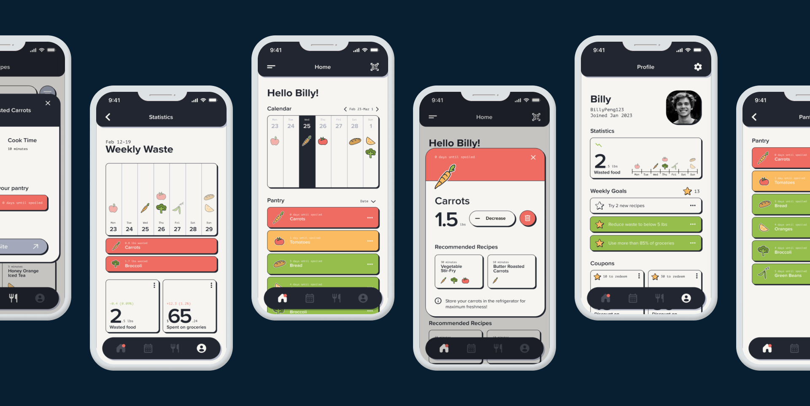
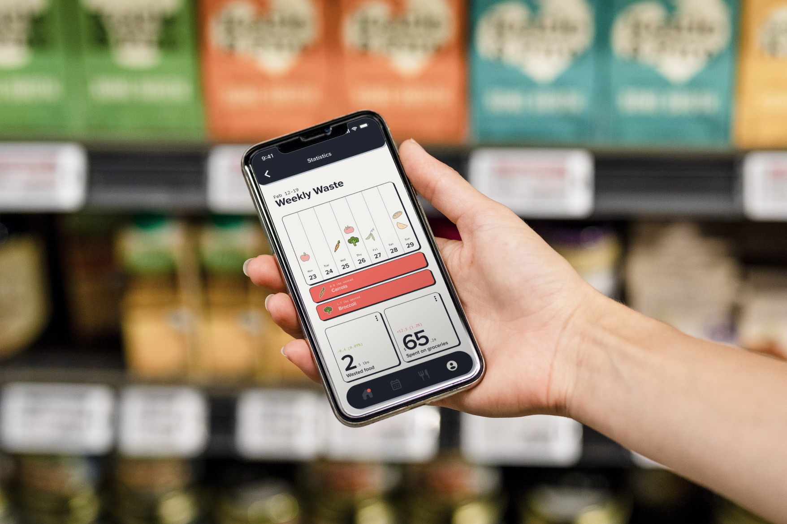
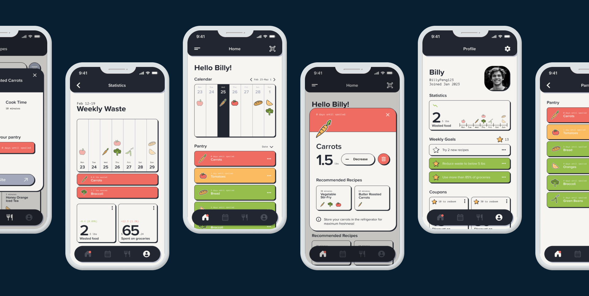
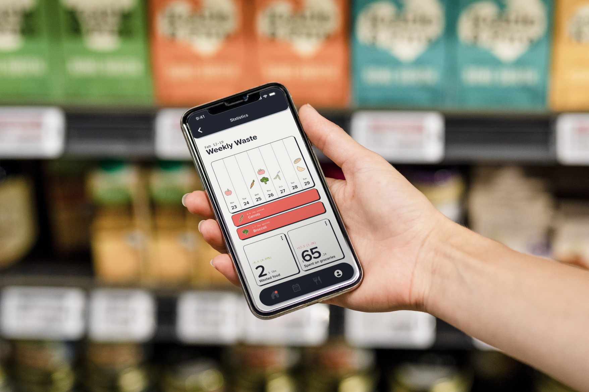
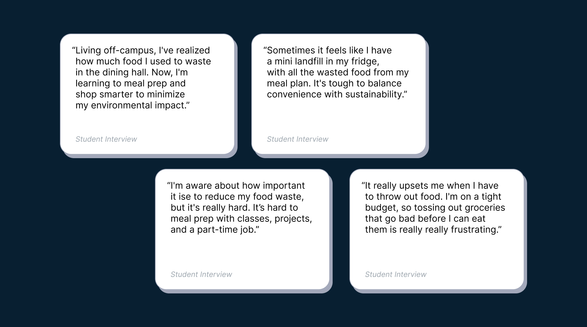
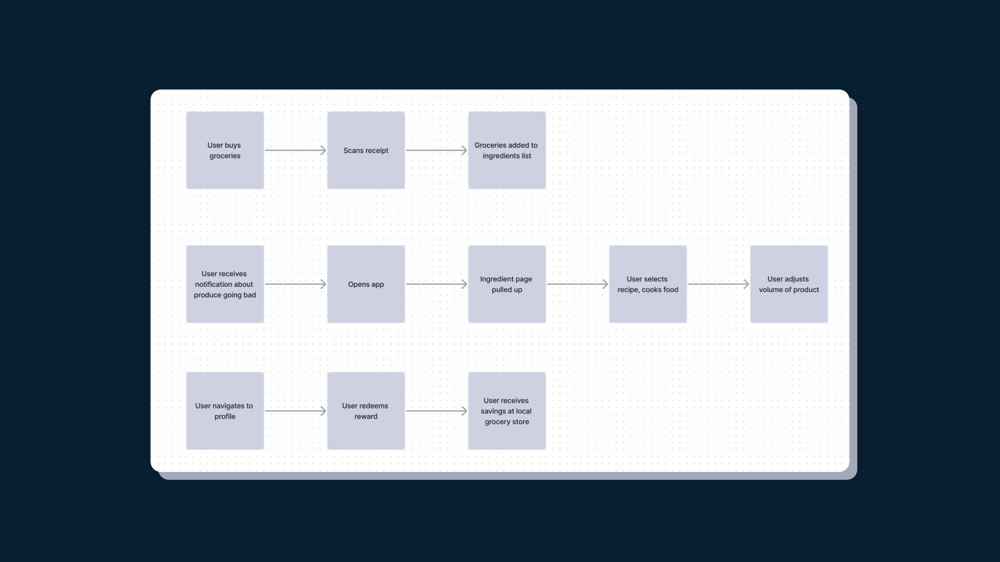
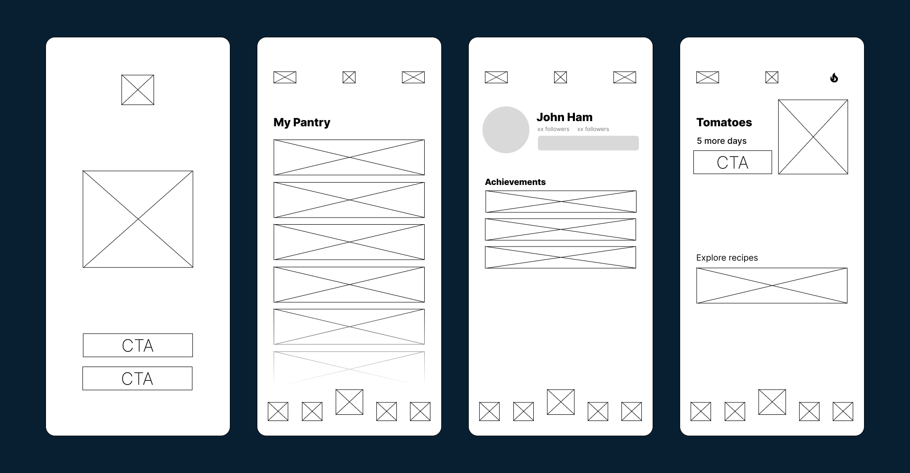
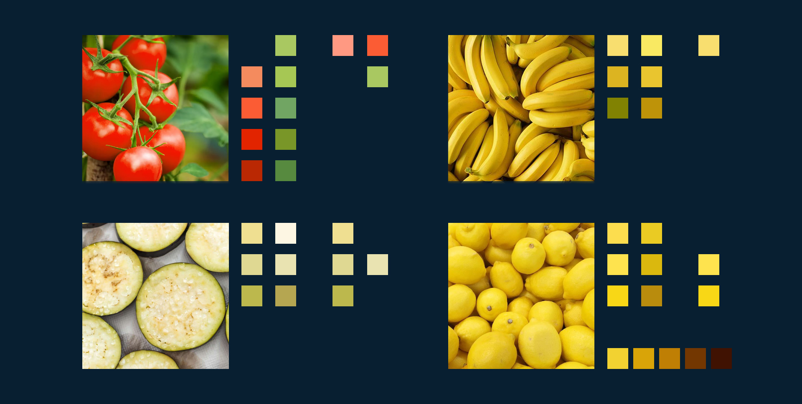
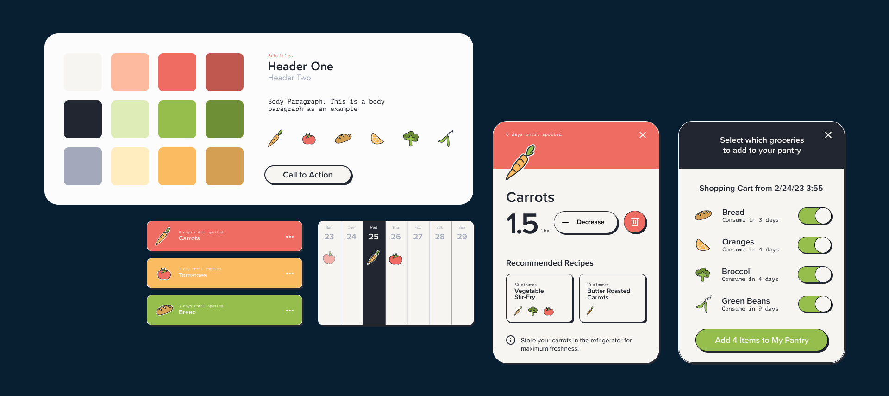

-
Course Project
Catching young people up with life skills that used to only come with age.
-
Skills
UX Design
Systems Thinking
Product Design -
Duration
One week
Spring 2023 -
Team
Jin Peng
-
Tools
Figma
Figjam -
 



-
Waste Not Want Not is a sprint project aimed at re-imagining young people's relationship with food through systemic change, supported with digital products.
-
• Context
An epidemic of food waste.
-
This project prompt was to identify a problem, and persuade people to change some sort of behavior to ammend the problem. Billy and I identified food waste as something to address, given our personal experiences. We quickly realized how big of an issue it was after some initial research.
Americans waste something like 80 billion pounds of food every year, and young people ages 18-35 are the main contributing age group to consumer-end food waste. - 
-
• Conceptualizing
A tool that holds your hand while you learn food responsibility.
-
Inspired by self-help and education apps, we developed features that create structure and clarity for food tracking, in order to gameify being responsible about grocery usage and encourage better habits.
-  
-
• Visual
Colorful, Bright, Attention-Grabbing
-
When deciding on the visual direction for this product, we decided to go with colors inspired by both the natural and artificial. Colors pulled from the environment that also symbolize states like 'stop', 'slow', and 'go'. These states are then used as the base for the function of our app, easily representing the state of various grocery items visually.
- 
-
The visual assets for this project took inspiration from a lot of existing trendy self-help apps, with exagerated rounded corners. We decided to reinforce the boldness of the colors with dark shadows on all assets, creating nice opportunities for motino as well.
-


-
• Demo
An app that gamifies being responsible about your groceries.
-
The resulting deliverables from this project were supposed to inspire our peers to make actionable change in their lives towards our end goal. This prototype was one artifact in an ecosystem of others all intended to come together and guide young people towards responsibility.
The core features of this app are demo-ed below, each focusing on a different experience we believed would draw users in and keep them engaged. -
• Reflections
"Wait... I would actually use this."
-
This project was an exercise in identifying a problem and crafting an adequete solution, and the biggest success metric that we found was our peers, the original interviewed audience, genuinely wanted our tool so that they could improve their own habits.

Personal Connection
Taking inspiration from apps like Duolingo, to invoke a sense of ownership and personal responsibility.
Produce Tracking
Color-coded digital grocery tracker that decreases decision fatigue by recommending recipes that use produce.


Reciept Scanning Automation
Scanning a reciept uploads all perishable groceries to digital tracker, making it impossible to miss an item.
Personalized History
Gamified and friendly visualization of food waste history nudges user towards more responsible consumtion habits.